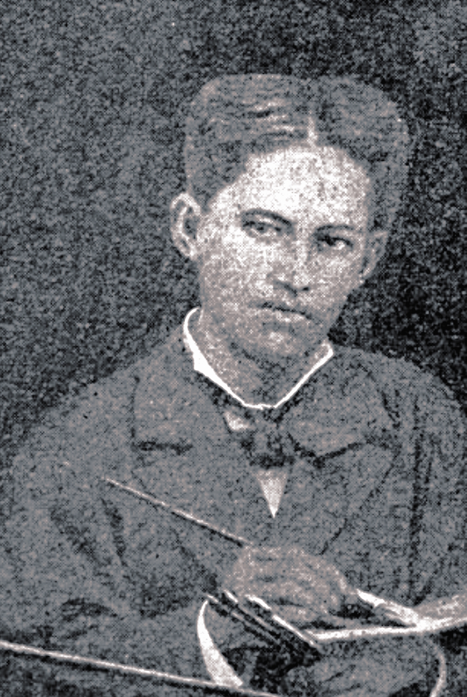

In 1872, Rizal became a student at the Ateneo Municipal de Manila. The Jesuit educational system emphasized the importance of developing such qualities as discipline, competitiveness, piety, and intellectualization.
Rizal excelled in his studies, mastering the fundamentals of literature, languages, philosophy, and the sciences. His time at the Ateneo also prepared him for future challenges, including the need to develop a sense of discipline and independence (Schumacher, 1977).